CEU Camera Usage Instructions(MIPI LCD)
English|Chinese
Introduction
This example demonstrates how to use the CEU (Camera Engine Unit) interface on the Titan Board to connect an OV5640 camera, and display the captured images on an MIPI LCD screen via the RT-Thread LCD framework.
Key functionalities include:
Initialize the CEU camera interface to capture real-time video streams
Configure OV5640 camera parameters (resolution, frame rate, output format)
Display captured images using the RT-Thread LCD driver
Support image format conversion (YUV422 → RGB565)
RA8 Series CEU (Camera Engine Unit) Features
The RA8 series MCU integrates a CEU hardware module for efficient capture of camera image data, supporting multiple image formats and resolutions, and enabling direct transfer to memory or display interfaces.
1. CEU Hardware Interface Features
Interface Types
DVP (Digital Video Port) interface for connecting CMOS cameras
Supports 8/10/12-bit data bus
Synchronization signals:
PCLK: Pixel clock
HSYNC: Line synchronization
VSYNC: Frame synchronization
Input Resolution and Frame Rate
Supports VGA, QVGA, SXGA, UXGA, and other common resolutions
Frame rates from 1–60 fps, configurable for different applications
Camera Compatibility
Compatible with common CMOS cameras such as OV5640, OV7670
Supports auto-initialization and register configuration
2. Image Formats and Processing Capabilities
Supported Image Formats
YUV422 (commonly used for video transfer)
RGB565 (suitable for LCD display)
RAW10/RAW12 (for image processing and algorithm development)
Image Processing Features
Color space conversion: YUV ↔ RGB
Image cropping: capture only a specific ROI (Region of Interest)
Image scaling: support proportional scaling up or down
Mirror and flip: horizontal or vertical mirroring
Hardware Acceleration
CEU contains a hardware processing unit to reduce CPU load
Provides fast image format conversion and scaling
3. DMA Support and Buffer Mechanism
High-Speed DMA Transfer
Works with MCU DMAC for fast memory writes
Supports direct writing to frame buffer or LCD buffer
Multi-Buffer Mechanism
Supports double buffering or ring buffers for continuous video capture
Reduces frame loss and display latency
Flexible DMA Configuration
Configurable buffer start address and size
Supports interrupt triggering and callbacks
4. Interrupt Mechanism
Interrupt Types
Frame End Interrupt: triggered when each frame capture completes
Line End Interrupt (optional): triggered at the end of each line capture
Error Interrupt: including buffer overflow or sync signal anomalies
Interrupt Features
Supports RT-Thread ISR callback registration
Can work with DMA for real-time processing and display
5. Timing and Synchronization Features
Line/Frame Synchronization
HSYNC aligns each line of data
VSYNC aligns each frame
Pixel Clock
CEU supports external PCLK or internal clock division
Ensures synchronization with camera output to avoid sampling errors
Data Alignment
Supports byte or pixel alignment
Automatically adjusts according to image format
6. Performance and Optimization
High Throughput
DMA + double buffering enables continuous video capture
Low CPU usage suitable for real-time applications
Reliability
Sync signal anomalies trigger interrupts
Buffer overflow detection
Automatic recovery from frame loss
Flexibility
Supports multiple resolutions and format switching
Configurable cropping and scaling regions to improve display efficiency
7. Application Scenarios
Real-time video display on LCD
Video capture and image processing algorithm testing
Embedded vision applications, e.g., surveillance, gesture recognition, robotics vision
RA8 Series GLCDC Module
1. Overview
The GLCDC (Graphics LCD Controller) is a high-performance graphics controller integrated in RA8 series MCUs, specifically designed to drive TFT/RGB LCD screens. It supports various resolutions, color formats, and graphics processing functions. Combined with RT-Thread’s LCD driver framework, it provides a unified interface for screen initialization, refresh, graphics rendering, and DMA-accelerated operations.
The RA8 GLCDC enables image output from either internal MCU memory or external frame buffers to RGB/LCD displays. Key features include:
Frame buffer control: Supports multiple frame buffers for page switching or double-buffered display
Color format support: RGB565, RGB888, ARGB8888, etc.
Graphics processing: Background layers, text/graphics composition, alpha blending, palette mapping
Synchronization signal generation: HSYNC, VSYNC, DE (Data Enable)
DMA support: High-speed data transfer, reducing CPU load
Interrupt functionality: Frame-end and line-end interrupts
2. Module Architecture
The RA8 GLCDC module mainly consists of the following submodules:
Layer Composition Unit
Supports multiple layer stacking
Provides alpha blending, transparency control, and color keying
Allows rotation and flipping of layers
Frame Buffer Interface
Supports access to MCU internal SRAM or external memory
Provides single or double buffering to ensure continuous display
Works with DMA to automatically read image data
DMA Controller
Automatically transfers pixel data to the RGB output port
Configurable burst length to improve bandwidth utilization
Supports circular transfer, suitable for video or animation scenarios
Timing Generator
Automatically generates HSYNC, VSYNC, and DE signals
Supports TTL interface RGB timing
Polarity, sync width, and front/back porch timings are configurable
Interrupt and Event Controller
Provides frame-end and line-end interrupts
Can be used for page switching, dynamic drawing, or scrolling display
Supports interrupts triggered by DMA transfer completion
3. GLCDC Working Principle
Frame buffer read
GLCDC uses DMA to fetch image data from memory, supporting single or double buffering for continuous display.
Layer composition
Supports multiple layers such as background + foreground + icons/text
Provides alpha blending and palette mapping
Pixel timing output
Generates HSYNC/VSYNC/DE signals according to LCD interface requirements
Supports RGB parallel interface, TTL interface, or LVDS (depending on board implementation)
Interrupts and events
Frame-end interrupt (VBlank): Can be used to update the next frame
Line-end interrupt: Useful for scrolling displays or dynamic rendering
4. GLCDC Supported Features
Feature Category |
Description |
|---|---|
Resolution |
Up to 1280x800 |
Color formats |
RGB565, RGB888, ARGB8888, etc. |
Multi-layer |
Background + foreground + icon layers, supports blending |
Frame buffer |
Single/double buffer mode, DMA improves performance |
Palette |
8/16-bit palette mapping for color conversion |
Sync signals |
HSYNC, VSYNC, DE, configurable polarity and timing |
DMA support |
Automatic memory transfer, CPU-free |
Interrupts |
Frame-end, line-end interrupts for synchronized refresh |
Rotation/Flip |
Supports 90°/180°/270° rotation and X/Y flipping |
Hardware Description
The CEU camera interface is shown in the following figure:
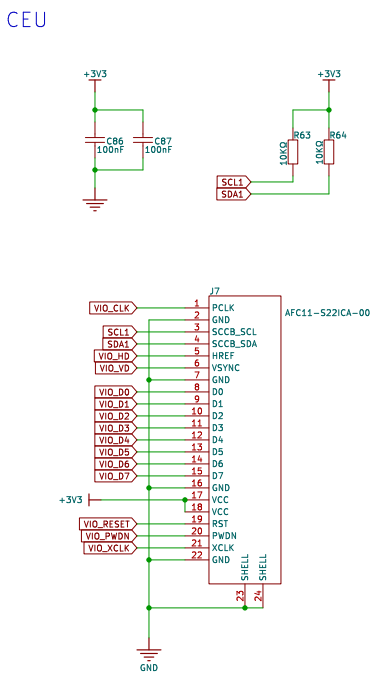
The MIPI LCD interface is shown in the following figure:
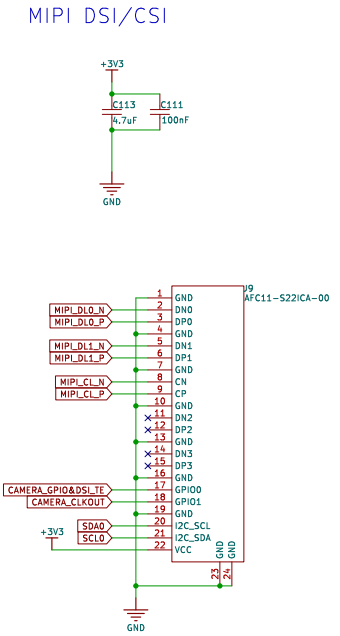
The connection method of the CEU camera is as shown in the following figure:
Use a 22-pin reverse FFC cable to connect the development board’s CEU_CAM connector to the camera adapter board’s DVP connector.
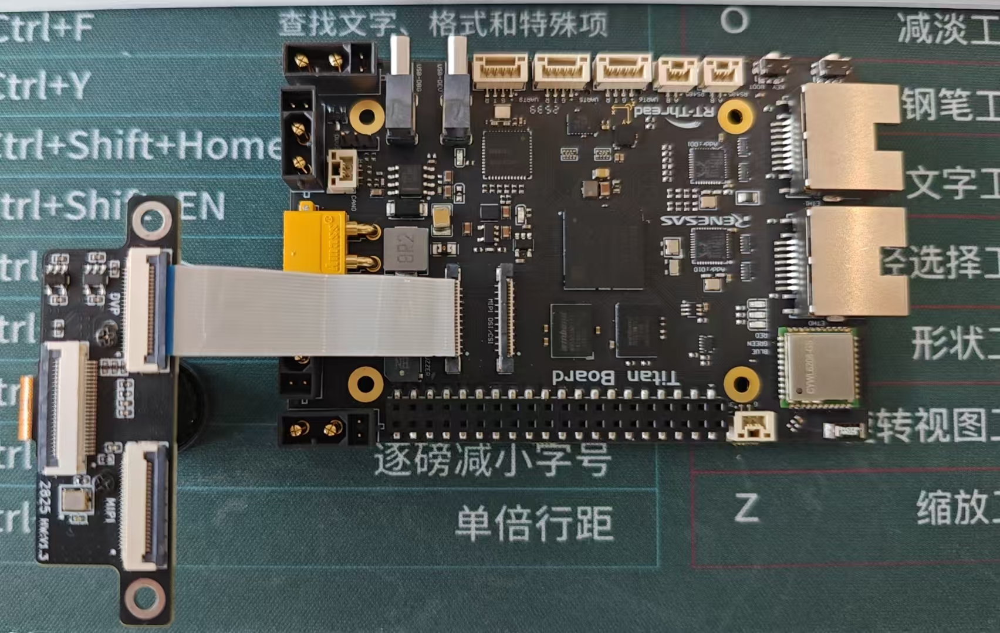
The MIPI LCD connection method is as shown in the following diagram:
Use a 22-pin reverse FFC cable to connect the development board’s MIPI DSI/CSI connector to the display adapter board’s DIS-MIPI connector. Then connect the MIPI display to the adapter board’s TITAN-MIPI connector.
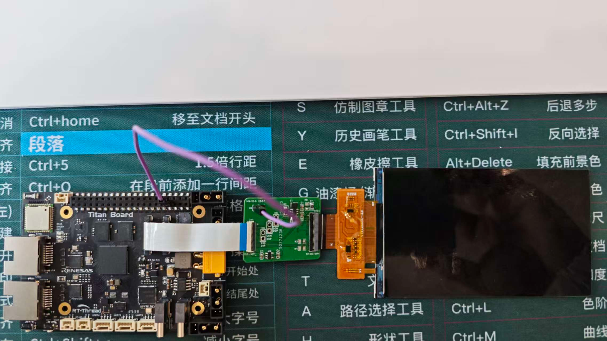
FSP Configuration
HyperRAM Configuration
Create a
r_ospi_bstack:

Configure the r_ospi_b stack:
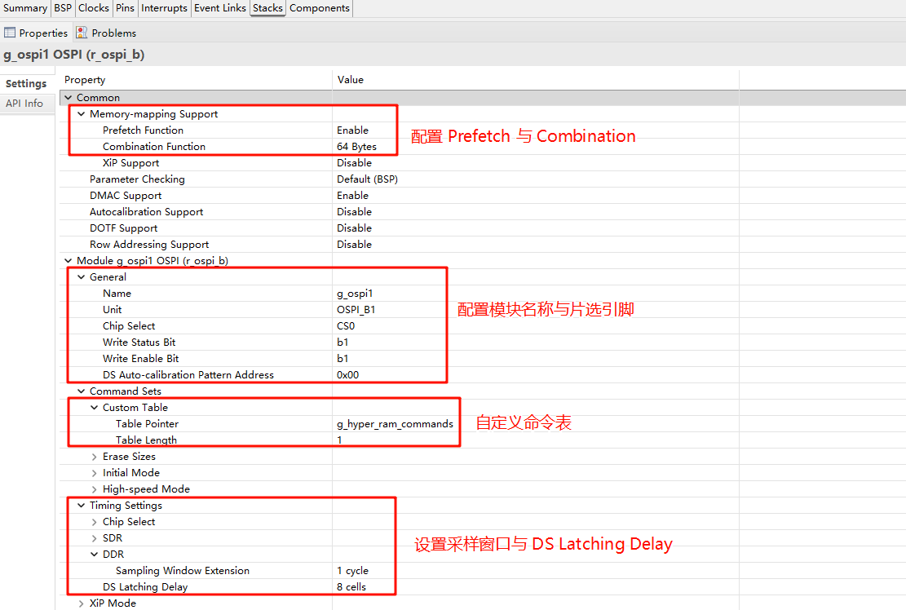


HyperRAM pin configuration:

The drive capability of all pins related to HyperRAM should be configured as H, and OM_1_SIO0 to OM_1_SIO7 need to be configured as Input pull-up.
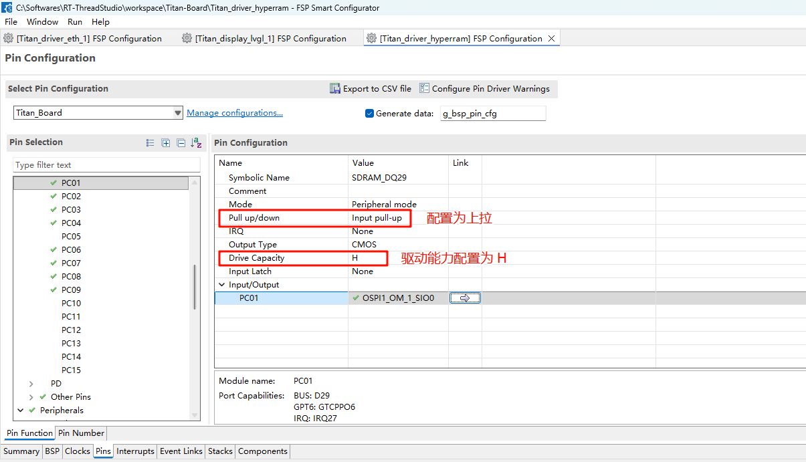
CEU Configuration
Create a
r_ceustack：
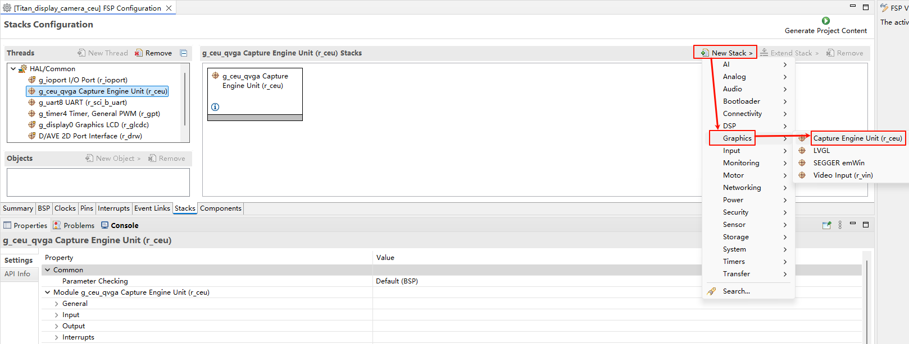
Configure CEU：
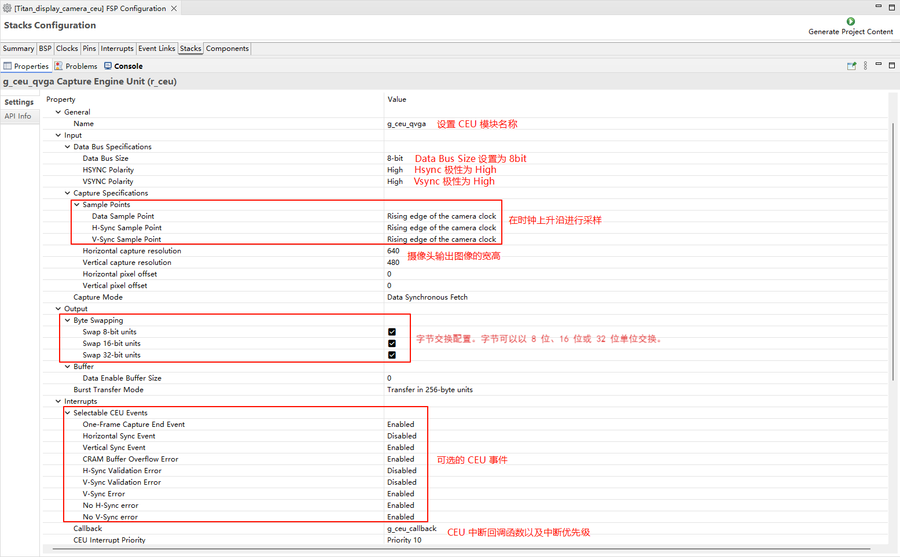
Configure CEU pins：
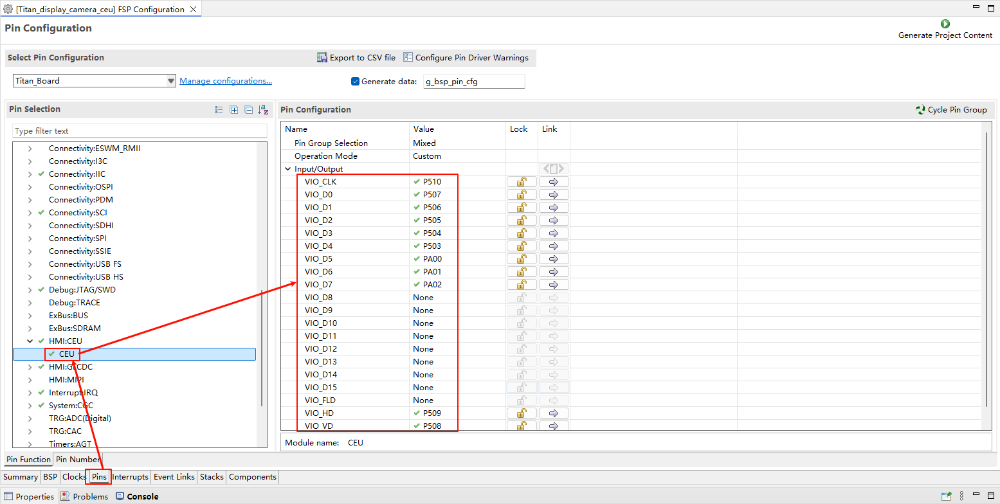
D/AVE 2D Configuration
Create a
r_drwstack:

GLCDC Configuration
Create a
r_glcdcstack:

Configure interrupt callback and graph layer 1:
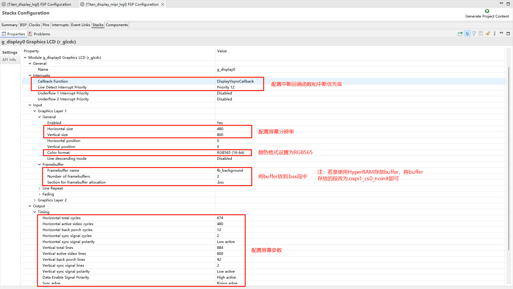
Configure Output、CLUT、TCON and Dithering:
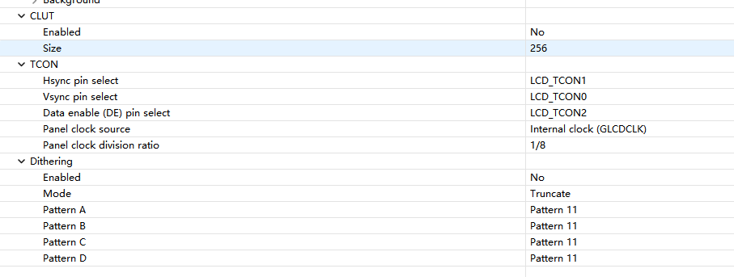
MIPI DSI Configuration
Create a
r_mipi_dsistack.
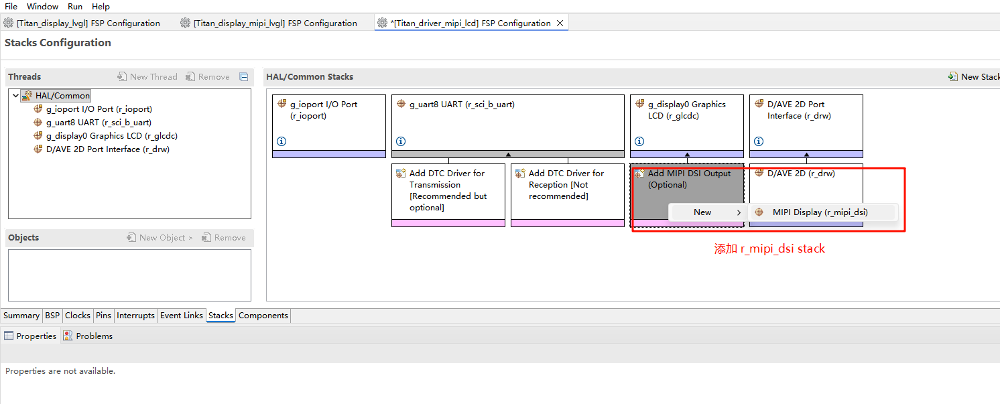
Configure MIPI DSI_TE pins.
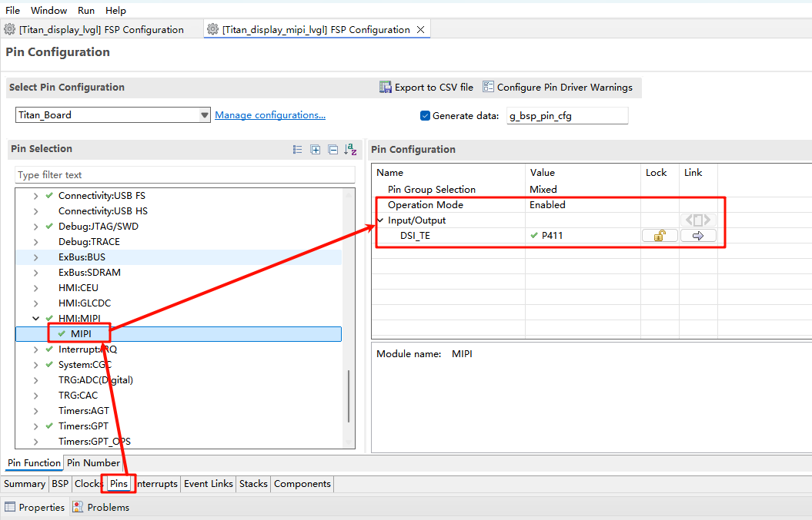
RT-Thread Settings Configuration
Enable CUE camera, using i2c1 and ov5640 camera. Enable MIPI LCD, configure reset and backlight pins.
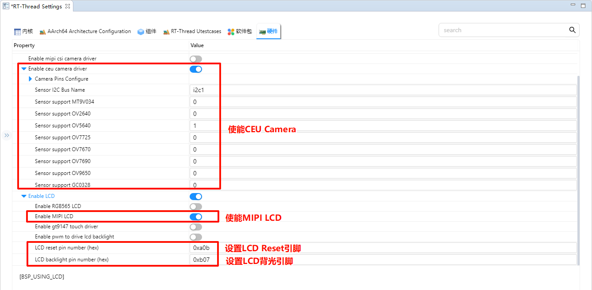
Compilation & Download
RT-Thread Studio: In RT-Thread Studio’s package manager, download the Titan Board resource package, create a new project, and compile it.
After compilation, connect the development board’s USB-DBG interface to the PC and download the firmware to the development board.
Run Effect
After resetting the Titan Board, the terminal will output the following message:
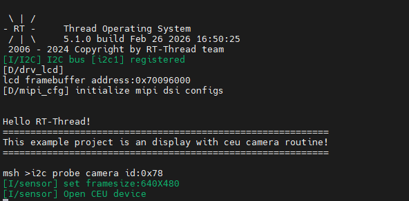
Here is the image displayed on the LCD screen:
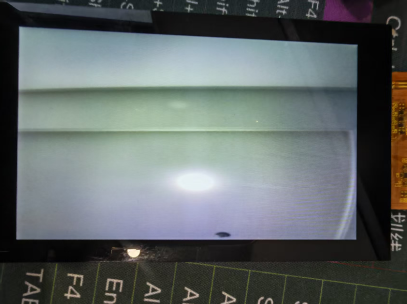